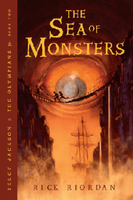
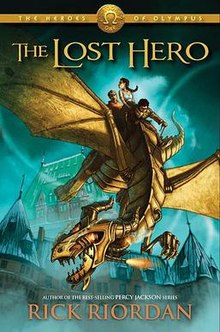
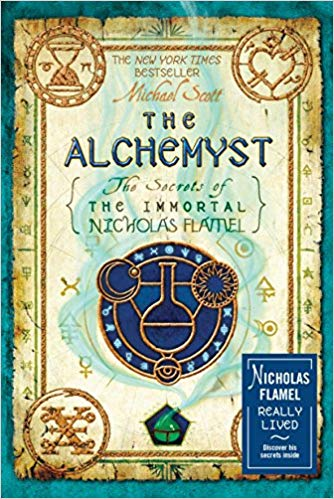
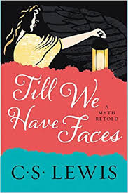
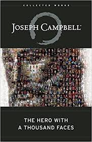

.jpg)
.jpg)
Title:Mythology
Author: Edith Hamilton
Summary:Mythology resembles one large Spark Note in itself, offering a detailed overview of the myths of ancient Greece and Rome and a brief overview of Norse mythology.
Date
Published:1942
Genre:Fairy Tale and Historical Fiction

Title:The Sea of Monsters
Author:Rick Riordan
Summary:In order to restore their dieing safe haven,the son of Poseidon and his friends embark on a trip to the Sea of Monsters,to find the mythical Golden Fleece,all the while trying to stop an ancient evil from rising.
Date Published:April 1,2006
Genre:Fantasy,Greek Mythology,Young Adult Fiction
.jpg)
Title:Hamlet's Mill
Author:Giorgio Diaz De Santillana and Hertha Von Dechend
Summary:The Main argument of the book may be summarized as the claim of an early neolithic discovery of the precession of the equinoxes (usually attributed to Hipparchus 2nd century BCE), and an associated very long-lived Megalithic civilization of "unsuspected sophistication" that was particularly preoccupied with astronomical observation.
Date Published:November 1969
Genre:
Myth and Astronomy

Title:The Lost Hero
Author:Rick Riordan
Summary:The story follows Jason Grace, a Roman demigod with no memory of his past. He, along with Piper McLean, a daughter of Aphrodite, and Leo Valdez a son of Hephaestus, are given a quest to rescue Hera, the queen of gods, from the clutches of Gaea,the primordial goddess of the earth.
Date Published: October 12, 2010
Genre:Young Adult Fiction

Title:The Alchemyst: The Secrets of the Immortal Nicholas Flamel
Author:Michael Scott
Summary: When the necromancer and immortal magician Dr. John Dee steals the ancient book the Codex from its keeper, Nicholas Flamel, two teenagers named Sophie and Josh Newman are caught up in the danger and magic. Dee also captures Nicholas Flamel's wife, Perenelle.
Date Published:May 22, 2007
Genre:
Fantasy,Thriller,Fiction,Myth

Title:Till We have Faces
Author:C.S. Lewis
Summary: It is a retelling of Cupid and Psyche, based on its telling in a chapter of The Golden Ass of Apuleius. This story had haunted Lewis all his life, because he realized that some of the main characters' actions were illogical.
Date Published:1956
Genre:
Myth and Novel

Title:The Hero with A Thousand Faces
Author:Joseph Campbell
Summary:A work of comparative mythology by Joseph Campbell. In this book, Campbell discusses his theory of the mythological structure of the journey of the archetypal hero found in world myths.
Date Published:1949
Genre:
Myth